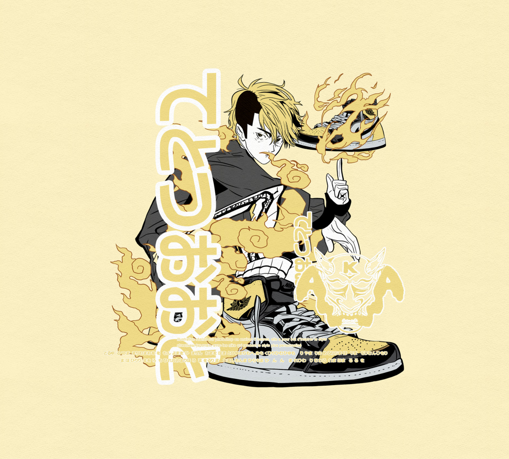
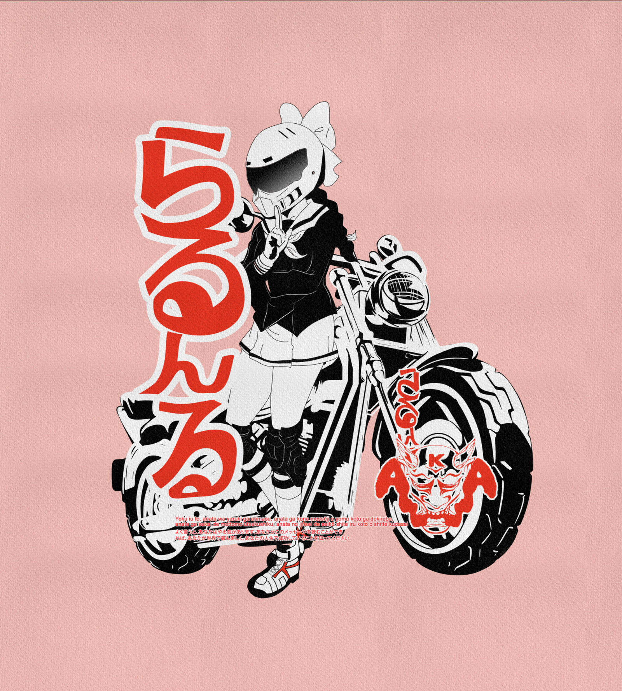

Illustration 01

Le projet
Cette illustration mêle dessin et construction vectorielle autour de la mode streetwear japonaise des années 2020. Le personnage, sa tenue et ses accessoires forment une silhouette expressive, accompagnée d’une composition graphique qui prolonge son attitude.
Le projet explore le passage du trait dessiné à une image structurée par les contours, les aplats et les contrastes. Il associe ainsi la spontanéité du dessin à la précision du vectoriel.
L’intention créative
Le travail se concentre particulièrement sur le design des chaussures. Leur construction, leurs volumes et l’articulation des détails demandent de conserver une perspective cohérente tout en affirmant un dessin stylisé. Elles participent pleinement à l’identité du personnage.
La palette jaune et noire permet de faire ressortir les lignes et les différentes couches de la composition. Les éléments typographiques et graphiques donnent du rythme sans effacer la silhouette : l’enjeu est de conserver une lecture forte, même dans une image riche en détails.

Projet suivant